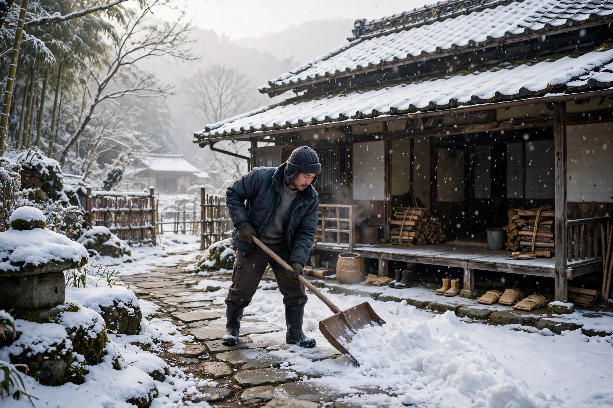
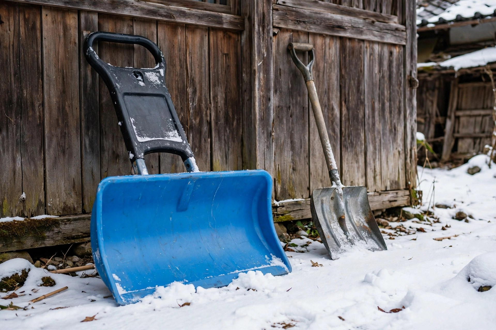
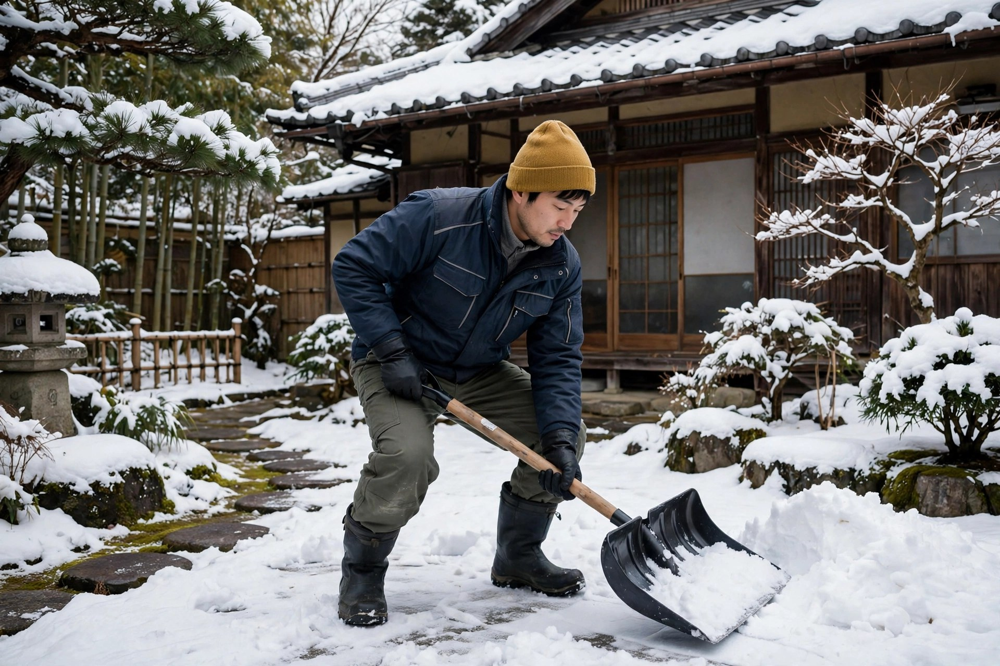

雪かき道具の選び方｜スコップ・スノーダンプ・腰を守るコツ

雪の朝、玄関前や通路の雪かきは冬の日常作業です。古民家は敷地が広く、玄関から道路までの距離も長いことが多いので、雪かきの範囲が広くなりがちです。道具を適当に選ぶと、重い雪を何度も持ち上げて腰を痛めたり、作業がいつまでも終わらなかったりします。道具選びと使い方のコツを知っておくと、同じ雪でも負担はかなり変わります。
まず種類を知る：すくう・押す・運ぶ
雪かき道具は見た目が似ていても、役割が3つに分かれます。最初に決めるのは、雪をどう動かすかです。
- スコップ：雪をすくって持ち上げ、脇へ投げる道具。玄関まわりや階段など狭い場所、固まった雪を掘る作業に向きます。
- スノーダンプ：大きな皿に雪をのせて、押したり引いたりして運ぶ道具。広い通路や駐車場の雪をまとめて動かすのに向きます。
- スノープッシャー（ラッセル）：雪を押して脇へ寄せる道具。持ち上げないので腰への負担が少なく、薄く積もった雪の片付けに向きます。
玄関まわりの雪を脇へ寄せれば足りるならスコップかプッシャー、広い場所の雪を遠くへ運ぶ必要があるならスノーダンプ、というのが大まかな分け方です。1本で全部をこなそうとせず、場所に合わせて使い分けるのが基本です。
選び方1：雪の量と場所で決める
雪が少ない地域で、積もっても数センチ程度なら、軽い樹脂製のスコップ1本で十分なことが多いです。逆に、ひと晩で10cm以上積もる地域では、スコップですくって投げる作業だけでは時間がかかりすぎます。皿の幅が広いスノーダンプでまとめて運ぶほうが、作業が早く終わります。

場所の広さもポイントです。駐車場や長いアプローチがある家では、スノーダンプの幅が広いほど一度に運べる量が増えます。ただし、幅が広いほど雪をのせたときの重さも増すので、自分の体力に合ったサイズを選ぶことが大切です。狭い通路や階段まわりでは、小さめのスコップのほうが取り回しやすいです。
選び方2：素材で決める
素材は大きく分けて樹脂・アルミ・鉄（スチール）の3つです。
- 樹脂製（ポリエチレン・ポリカーボネート）：軽くて扱いやすい。女性や高齢者でも使いやすい反面、凍って固くなった雪には使えないと注意書きがあるものも多い。先端に金属の刃が付いたものは、固い雪にもある程度対応できる。
- アルミ製：軽くて錆びにくい。樹脂より丈夫で、固まった雪を掘る作業にも向く。折りたたみ式や伸縮式が多く、車に積んでおく予備にも便利。
- 鉄・ステンレス製：最も頑丈で、踏み固められた雪や氷にも使える。ただし重いので、長時間の作業では体力が必要。豪雪地帯では昔から使われてきた定番。
雪の少ない地域なら樹脂製、雪が多く固まりやすい地域ならアルミか鉄製、というのが目安です。柄の長さも大事で、使う人の身長に合っていないと腰を曲げすぎる原因になります。伸縮式や2段階調節式なら、家族で共有しやすいのも利点です。
腰を守るコツ
雪かきで一番こわいのは腰のケガです。雪は見た目より重く、湿った雪は1杯で数kgにもなります。次の点を意識するだけで、負担はかなり減ります。

- 膝を曲げて、腰を落としてすくう：腰だけを曲げて持ち上げると、腰に大きな負担がかかります。膝を曲げて体全体で持ち上げるのが基本です。
- 雪を遠くへ投げない：体をひねって遠くへ投げる動作は腰を痛めやすい原因です。雪は近くに置くか、スノーダンプで運ぶようにします。
- 一度にすくう量を減らす：皿いっぱいにすくうと重くなります。半分程度にすると、回数は増えても体への負担は減ります。
- こまめに休む：一気に終わらせようとせず、10〜15分ごとに一息入れる。朝の冷えた体でいきなり重労働をすると、ケガをしやすくなります。
- 積もる前に、こまめに片付ける：降っている最中に軽く1回、止んでからもう1回と分けると、1回あたりの雪が軽くなります。
また、雪かきの前に軽く体を動かして体を温めておく、滑りにくい靴を履く、という基本も忘れずに。凍った路面での転倒も、雪かきの時期によくあるケガです。
雪かきで使うアイテム
- スコップ（すくう・掘る用。樹脂製かアルミ製）
- スノーダンプ（広い場所の雪を運ぶ用）
- スノープッシャー（薄い雪を押して寄せる用）
- 折りたたみ式スコップ（車載・予備用）
- 滑りにくい防寒靴・防寒手袋
同じ用途のものはAmazonでも探せます（PR）
OMATA 雪かきスコップ（伸縮式・アルミ合金・収納バッグ付き）
収納と手入れ
雪かき道具は、使い終わったら雪を落として乾かしてからしまうのが基本です。濡れたままにすると、鉄製は錆び、木の柄は傷みます。玄関脇や軒下など、すぐ手に取れる場所に立てかけておくと、雪の朝に慌てずに済みます。シーズン前に、柄のガタつきや皿の割れがないか点検しておくのも忘れずに。
まとめ
- 道具は「すくうスコップ」「運ぶスノーダンプ」「押すプッシャー」の3種類。場所と雪の量で使い分ける
- 雪が少ない地域は軽い樹脂製、雪が多く固まりやすい地域はアルミか鉄製が目安
- 柄の長さは身長に合わせる。伸縮式なら家族で共有しやすい
- 腰を守るには膝を使う・遠くへ投げない・一度にすくう量を減らす・こまめに休む
- 使い終わったら雪を落として乾かしてからしまう